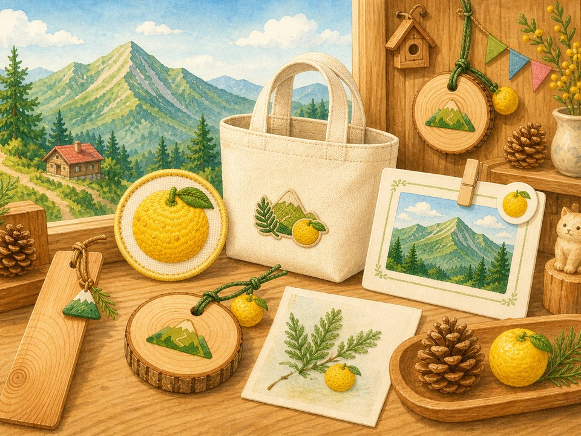
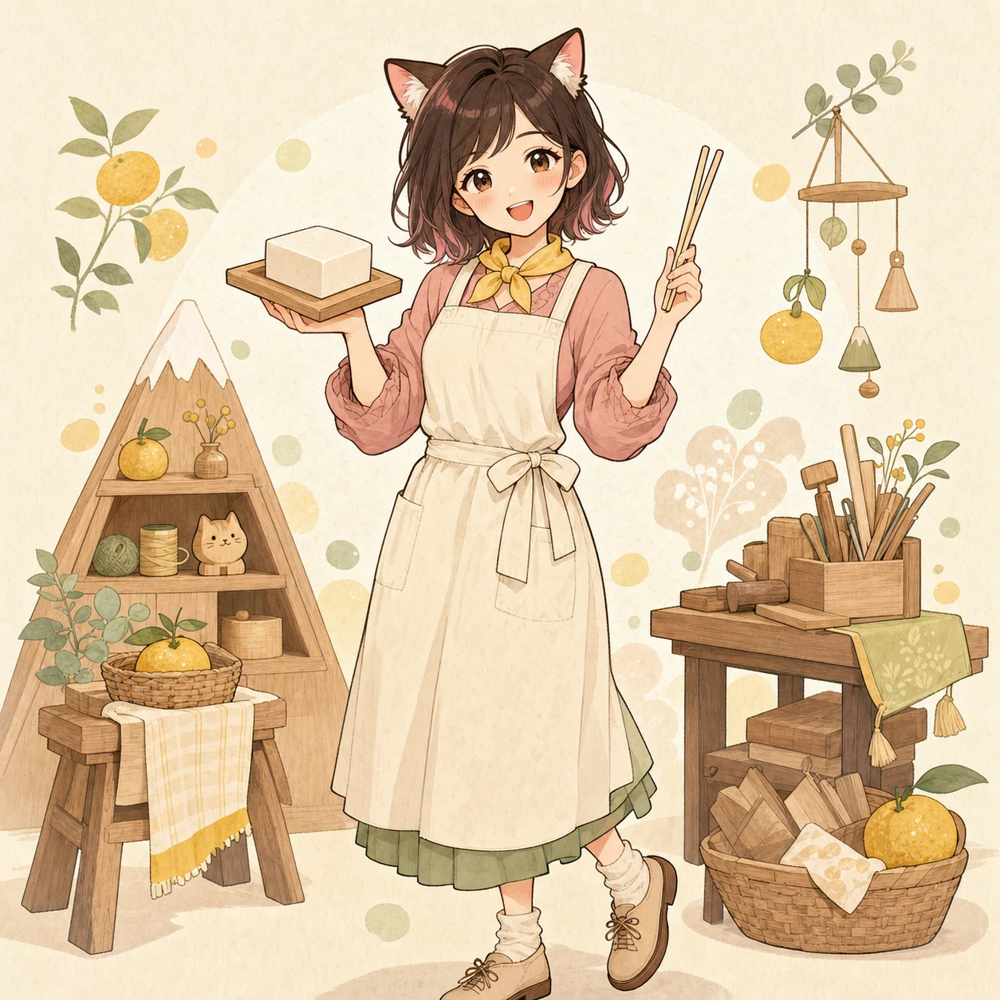
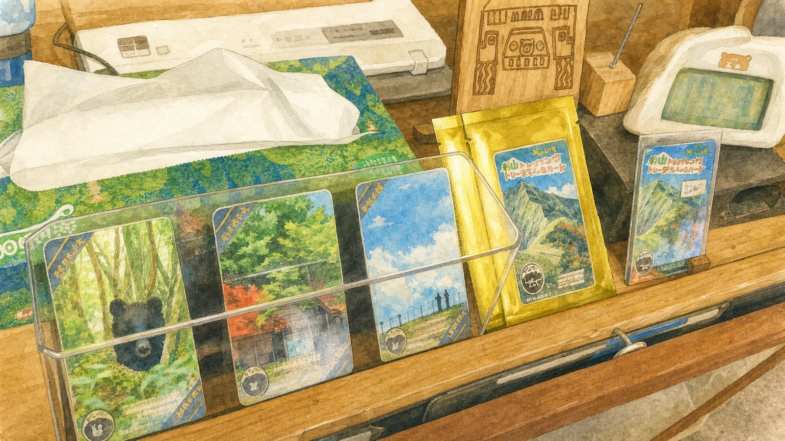
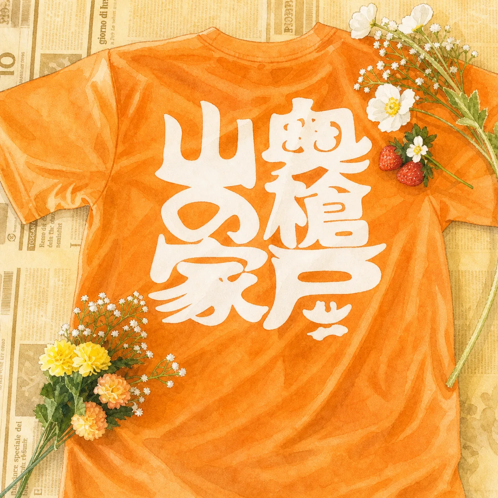
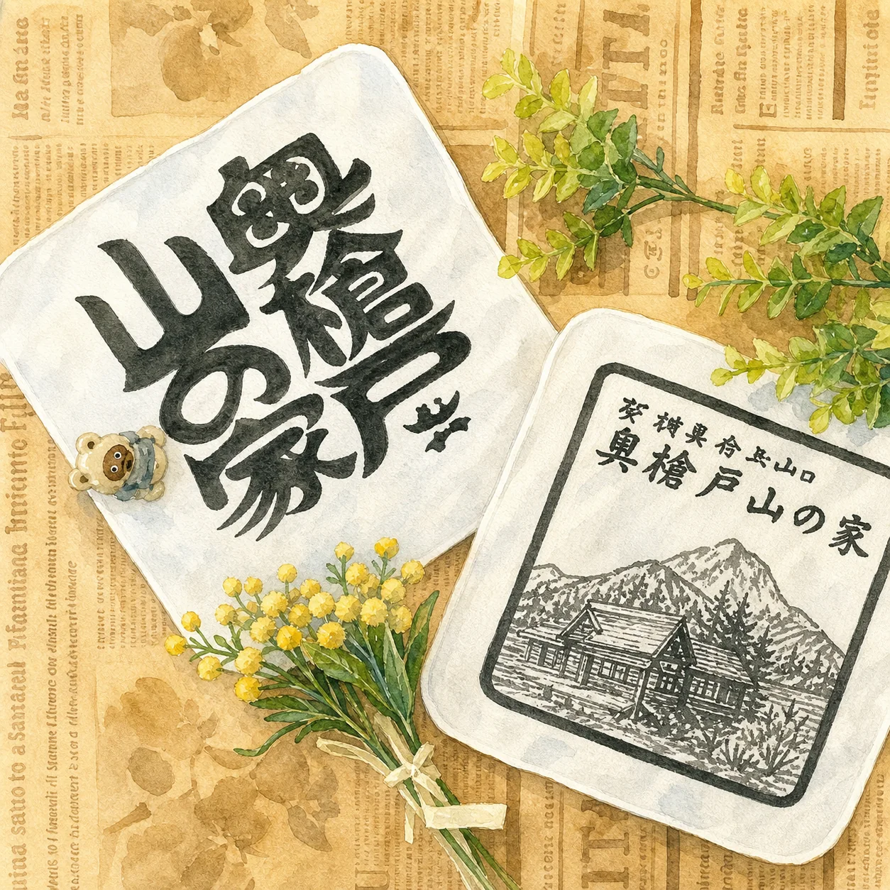
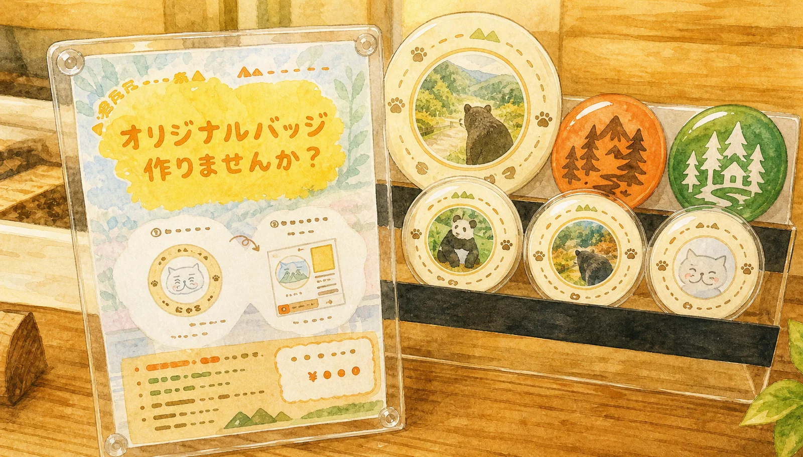
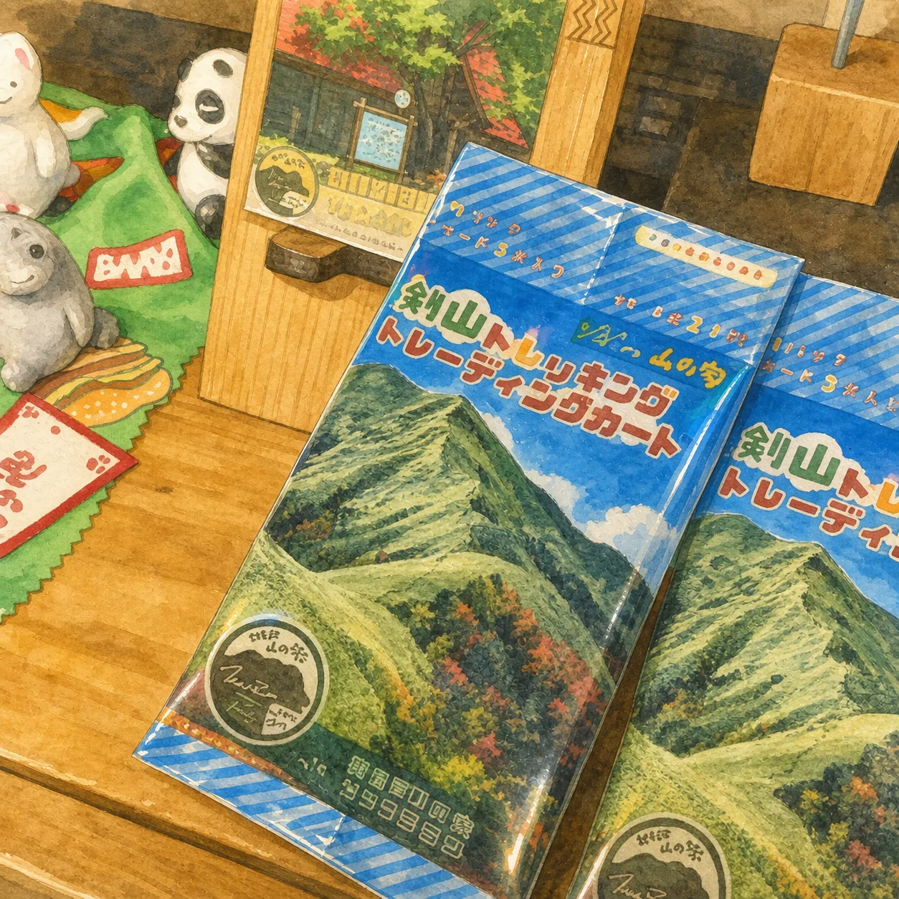
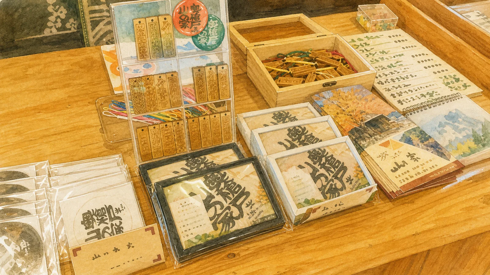
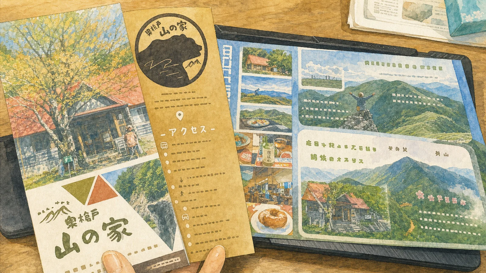
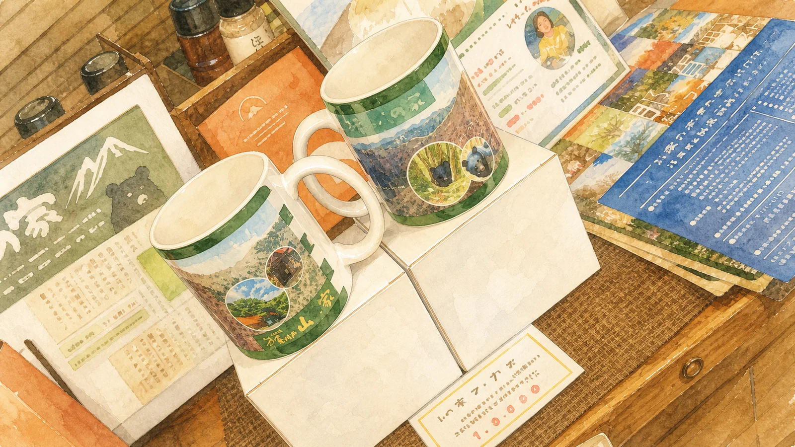

木のグッズ
木頭杉を使ったキーホルダー、コースター、バッジ、しおりなどを小ロットで作ります。
KITO SUGI / OKUYARIDO / HANDMADE
木頭杉や山の家まわりの物語を、キーホルダー、しおり、参加証、記念品などの小さなグッズにして届けます。


ただのおみやげではなく、そこへ行ったこと、そこで出会ったこと、好きな場所を少し支えたい気持ちまで持ち帰れるものを作ります。

Nekomono Mini Games
指先ひとつで、まっすぐ・ぴったりを狙う2つのゲーム。マウスでもスマホでも遊べます。

いらっしゃいませ！
力を抜いて、すーっと。今日の手仕事スコアを見てみよう。
TOFU CUT
白いお豆腐を横切るように、指かマウスで一本の線を引きます。
スタートを押してね。
左右の大きさが近いほど高得点です。
What I Make
木頭杉を使ったキーホルダー、コースター、バッジ、しおりなどを小ロットで作ります。
イベント用の参加証、謎解きキット、記念品など、体験のあとに残る小物を作ります。
キャップ、バッグ、Tシャツなどに、刺しゅうや小さなワンポイントを入れた布小物を作ります。
Works
山の家の風景や物語を、持ち帰れるかたちに。カード、Tシャツ、木の小物など、これまでに生まれた品々です。












About
大量生産ではなく、必要な分だけ、ひとつずつ。山の家、イベント、旅の思い出にそっと残るものづくりを目指しています。